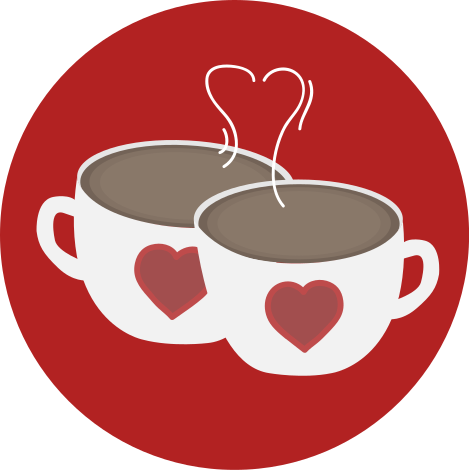

-
02

-
03

-
04

What is it?
Here at Hot Spot, we're big believers in the power of drinking coffee. In fact, we think it's a perfect way to find your true love (or maybe just someone to have some fun with). That's why we now offer an exlusive speed-dating event every week for Hot Spot customers. Come along, and maybe you'll find the one!
What goes on?
Our dating event is already very popular. Every week hundreds of customers turn up and socialise. It always makes for an interesting evening, but don't just take our word for it! We've put together some exlusive audiovisual content taken from one of our events, to show you what you're missing out on.